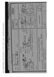
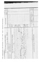

Genealogie_Complete
Graphique personnel
Parents
| Père | Date de naissance | Mère | Date de naissance |
|---|---|---|---|
 Paul ÉRIN Paul ÉRIN |
16 mars 1868 |  Marie Suzanne PROSPER (ERIN) Marie Suzanne PROSPER (ERIN) |
03 nov. 1876 |
Événements personnels
| Type d’événement | Date | Lieu | Description |
|---|---|---|---|
 Naissance Naissance |
19 juil. 1898 | Marigot, Martinique, Martinique, FRANCE | Inscrit le 27/08/1898 sous le n°86 |
| Décès |
08 oct. 1918 | Bouy, Département de la Marne, Champagne-Ardenne, FRANCE | |
| Inhumation |
Jonchery-sur-Suippe, Département de la Marne, Champagne-Ardenne, FRANCE |
Notes
| Unité(s) : 3e régiment d'infanterie coloniale (3e RIC) , 234e régiment d'infanterie (234e RI) 12 mai 1917 : Mobilisation militaire Classe 1918 - Mle 1245 à Fort-de-France. Incorporé à la Compagnie d'Infanterie Coloniale de la Martinique le 12/05/1917. Passé au Bataillon d'Infanterie Coloniale de la Martinique le 16/08/1917. Soldat de 1er classe le 27/12/1917. Embarquement pour la France à bord du "Puerto Rico" le 21/05/1918. Passé au 3e R.I.C. le 14/06/1918. Passé au 234e R.I. le 05/09/1918. Evacué de Hauviné (Ardennes) pour blessures de guerre le 08/10/1918. Décédé le 08/10/1918 des suites de blessures de guerre à 20h15 au hangar Farman commune de Bouy (51). Campagne contre l'Allemagne aux Antilles du 12/05/1917 au 20/05/1918. Campagne contre l'Allemagne en Europe du 21/05/1918 au 08/10/1918. Sources: https://www.patrimoines-martinique.org/ark:/35569/srlf8kc51zbv/0dbf554a-caab-4511-b9d2-be72a170c5cf 8 octobre 1918 : Décès - Bouy, 51078, Marne, Champagne-Ardenne, France Mort pour la France le 8 octobre 1918 à l'ambulance 1/68 dans le hangar Farman à Bouy (Marne), des suites de blessures de guerre. Sources: https://www.memoiredeshommes.sga.defense.gouv.fr/fr/ark:/40699/m005239e71d377e0 après 8 octobre 1918 : Décoration Croix de Guerre 1914-1918 avec étoile d'argent. ERIN (Vincent-de-Paul), mle 18912, soldat : jeune soldat plein d'entrain et courageux. Grièvement blessé, en Champagne, en poursuivant l'ennemi, est mort pour la France, le 8 octobre 1918. Croix de guerre avec étoile d'argent. Sources: JO n°343 du 17 décembre 1920 page 20924 après 8 octobre 1918 : Inhumation - Jonchery-sur-Suippe, 51307, Marne, Champagne-Ardenne, France Nécropole nationale de Jonchery-sur-Suippe. Tombe n°1114 https://www.memoiredeshommes.sga.defense.gouv.fr/fr/ark:/40699/m00635a8626b85e8 Sources: https://www.geneanet.org/cimetieres/view/10089516/persons/ 17 décembre 1920 : Décoration Médaille Militaire à titre posthume. https://gallica.bnf.fr/ark:/12148/bpt6k64476579 Sources: JO n°343 du 17 décembre 1920 page 20924 |
| Mort pour la France le 8 octobre 1918 à l'ambulance 1/68 dans le hangar Farman à Bouy (Marne), des suites de blessures de guerre. |
Sources
| Description | Référence/Commentaire | Qualité | Information | Preuve |
|---|---|---|---|---|
| Sans nom |
Je ne sais pas | Je ne sais pas | Je ne sais pas | |
| Sans nom |
Je ne sais pas | Je ne sais pas | Je ne sais pas | |
| Sans nom |
Je ne sais pas | Je ne sais pas | Je ne sais pas |
Médias

Etats signalétiques et des services, n° 1001 à 1500 - 1R110 - Archives Territoriales de Martinique

Etats signalétiques et des services, n° 1001 à 1500 - 1R110 - Archives Territoriales de Martinique part2

Etats signalétiques et des services, n° 1001 à 1500 - 1R110 - Archives Territoriales de Martinique part3